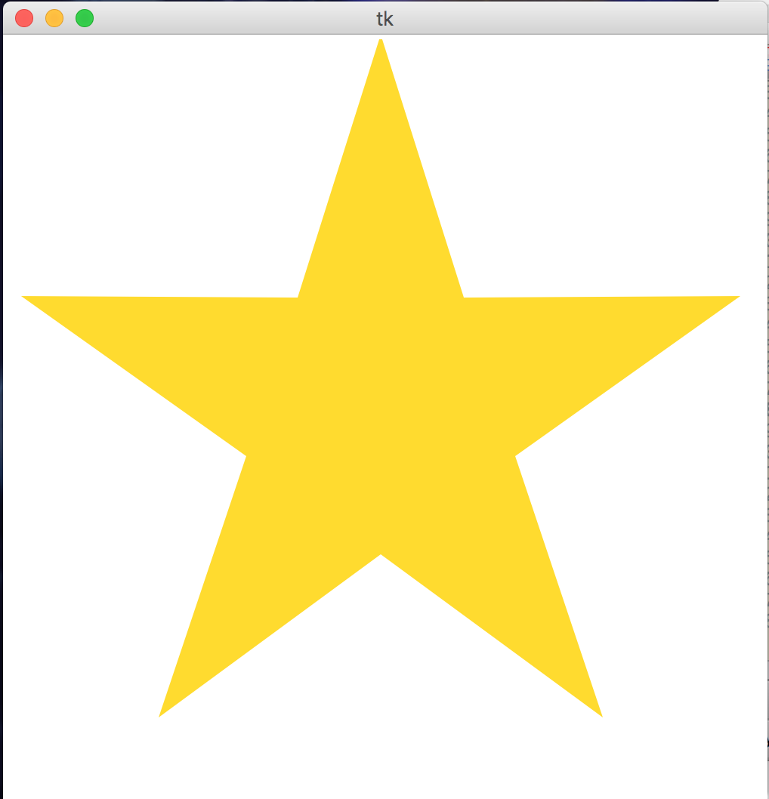

CMU 15-112 Spring 2018: Fundamentals of Programming and Computer Science
Colab 4 (Due Thursday 08-Feb, at 10pm)
- This assignment is collaborative. That means you may work with other students enrolled in the course, and you may even help each other write code and debug. However, you must still type all of your own work, and you must fully understand the code that you submit. Even though this is collaborative, you may not directly copy any code from anyone, and you may not electronically share your code with anyone. See the syllabus for more details.
- List your collaboration partners (name and andrew id) in a comment on the first line of this file. If you collaborate with another student and do not include their name in a comment, it will be considered cheating. You may work alone if you want to, but we recommend working with others, as it generally leads to better learning.
- Be a good collaborator! Help everyone in your group, and accept their help if you need it. Don't be in a hurry to finish the problems. Instead, take your time and be sure that everyone in the group is following and understanding. The goal is to learn, not just to finish.
- If you're looking for more people to collaborate with, you can request to be paired up with other 112 students using this form.
- To start:
- Go to your folder named 'week4'
- Download colab4.py and cs112_s18_week4_linter.py to that folder.
- Edit colab4.py using Pyzo
- When you are ready, submit colab4.py to Autolab. For this colab, you may submit up to 7 times, but only your last submission counts.
- Do not use recursion this week.
- Do not hardcode the test cases in your solutions.
- lookAndSay(a) [25pts]
First, read about look-and-say numbers here. Then, write the function lookAndSay(a) that takes a list of numbers and returns a list of numbers that results from "reading off" the initial list using the look-and-say method, using tuples for each (count, value) pair. For example:lookAndSay([]) == [] lookAndSay([1,1,1]) == [(3,1)] lookAndSay([-1,2,7]) == [(1,-1),(1,2),(1,7)] lookAndSay([3,3,8,-10,-10,-10]) == [(2,3),(1,8),(3,-10)]
Hint: you'll want to keep track of the current number and how many times it has been seen. - solvesCryptarithm(puzzle, solution) [25pts]
Background: a cryptarithm is a puzzle where we start with a simple arithmetic statement but then we replace all the digits with letters (where the same digit is replaced by the same letter each time). We will limit such puzzles to strings the form "A+B=C" (no spaces), where A, B, and C are positive integers. For example, "SEND+MORE=MONEY" is such a puzzle. The goal of the puzzle is to find an assignment of digits to the letters to make the math work out properly. For example, if we assign 0 to "O", 1 to "M", 2 to "Y", 5 to "E", 6 to "N", 7 to "D", 8 to "R", and 9 to "S" we get:S E N D 9 5 6 7 + M O R E + 1 0 8 5 --------- --------- M O N E Y 1 0 6 5 2And so we see that this assignment does in fact solve the problem! Now, we need a way to encode a possible solution. For that, we will use a single string where the index of the letter corresponds to the digit it represents. Thus, the string "OMY--ENDRS" represents the assignments listed above (the dashes are for unassigned digits).
With this in mind, write the function solvesCryptarithm(puzzle, solution) that takes two strings, a puzzle (such as "SEND+MORE=MONEY") and a proposed solution (such as "OMY--ENDRS"). Your function should return True if substituting the digits from the solution back into the puzzle results in a mathematically correct addition problem, and False otherwise. You do not have to check whether a letter occurs more than once in the proposed solution, but you do have to verify that all the letters in the puzzle occur somewhere in the solution (of course). You may not use the eval() function. Also, you almost surely will want to write at least one well-chosen helper function. - drawStar(canvas, centerX, centerY, diameter, numPoints, color) [25pts]
Write the function drawStar which takes a canvas and the star's center coordinates, diameter, number of points, and color, and produces a star based on that specification. To draw a star, we need to identify where to place each of the inner and outer points, then draw them all together as a polygon.
The outer points of the star should be evenly placed on a circle based on the specified diameter, with the first point at a 90 degree angle. The inner points should then be placed on a circle 3/8 the size of the first circle, halfway between the pairs of outer points. (We use this ratio to make a nice-looking five-pointed star. Actually, the best inner circle would be about 38.2% the size of the outer circle; a little trigonometry and problem-solving will tell you why! But 3/8 is close enough.) An example of how these circles work is shown below.
For example, this call:
drawStar(canvas, 250, 250, 500, 5, "gold")
produces this result:

And this call:
drawStar(canvas, 300, 400, 100, 4, "blue")
produces this result:
And if we add a few more points:
drawStar(canvas, 300, 200, 300, 9, "red")
we get this result:
Note: to test your code, you'll need to call drawStarHelper(centerX, centerY, diameter, numPoints, color), which sets up the canvas, then calls drawStar. We set up the function this way so that you can use drawStar in the final problem... - drawUnitedStatesFlag(winWidth=950, winHeight=500) [25pts]
Write the function drawUnitedStatesFlag which draws the US flag in the provided dimensions. You can assume that the height:width ratio will be 10:19, as is the case with the actual US flag.
You can find much useful information about the flag's dimensions on Wikipedia, but we do not expect you to match the actual US flag design perfectly; you should instead seek to create a reasonable approximation of the flag. However, your flag must meet the following requirements:
- The flag should cover the entire provided width and height
- The flag should have the correct number of stripes, alternating red and white in the correct order
- The blue field in the upper left corner should cover exactly seven stripes and have a reasonably correct width
- The flag should have the correct number of stars in the correct configuration, with the star size and spacing reasonably close to the actual flag
For examples of what reasonable flags might look like, here are some instructor-created flags: